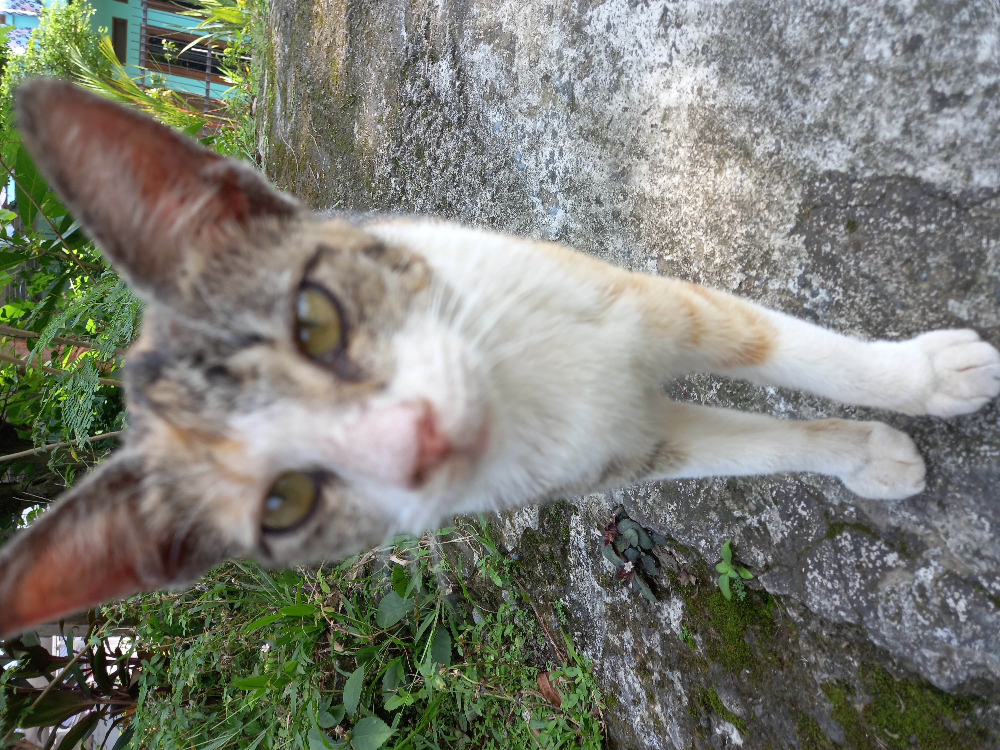
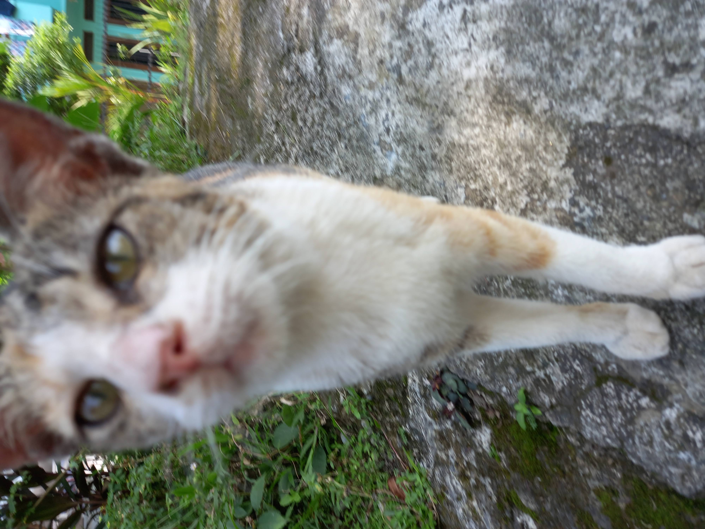
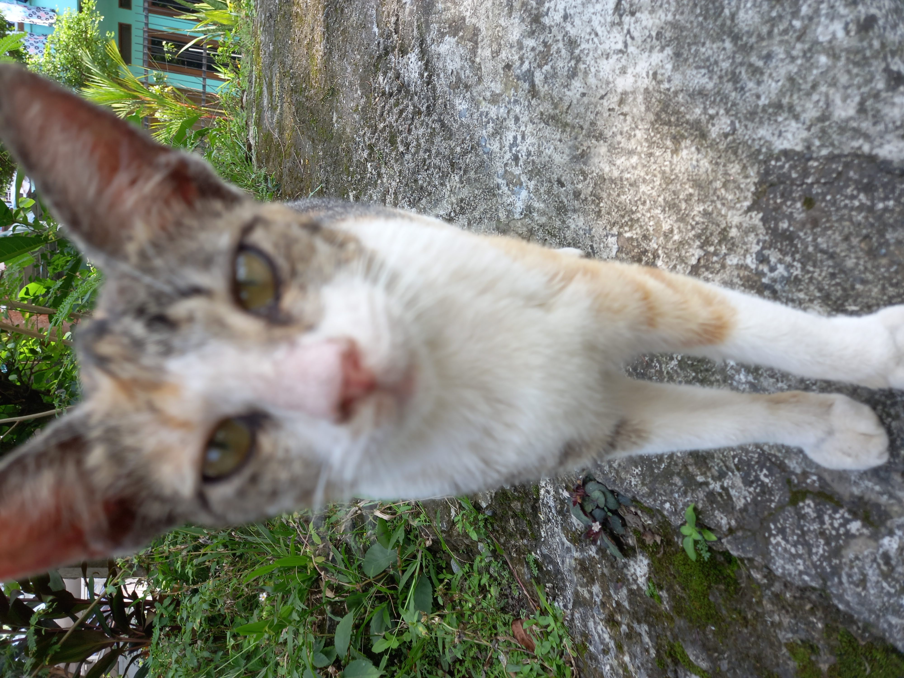
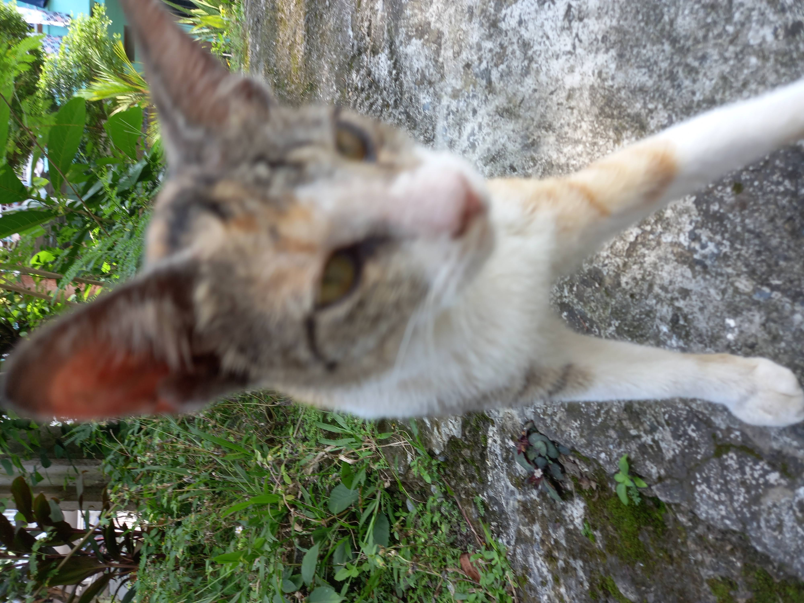
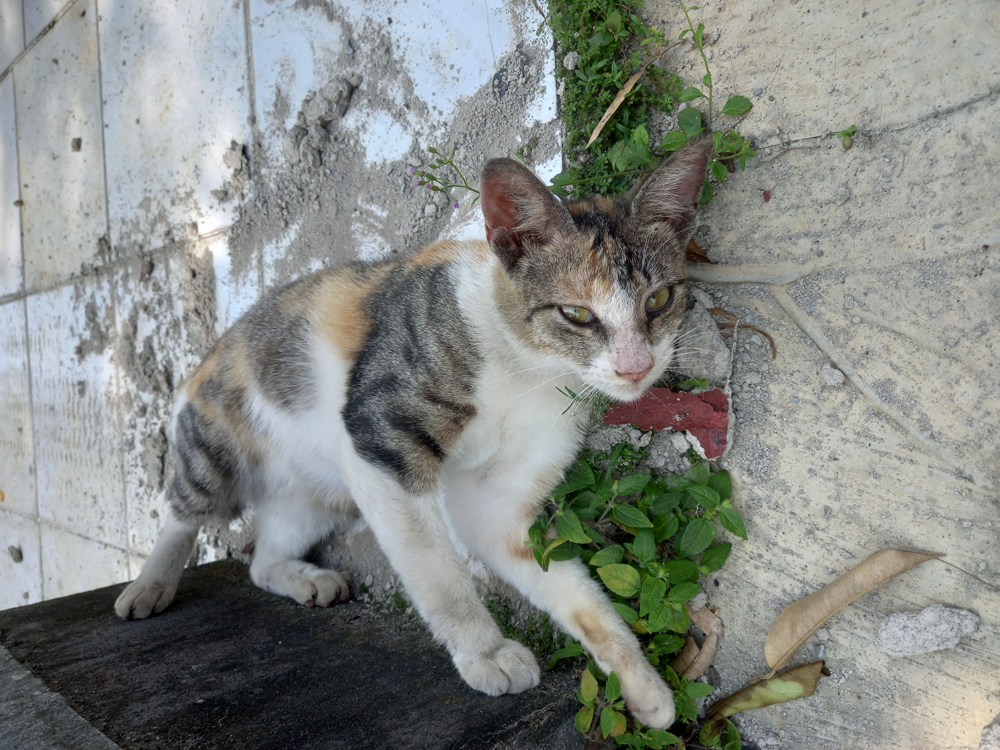
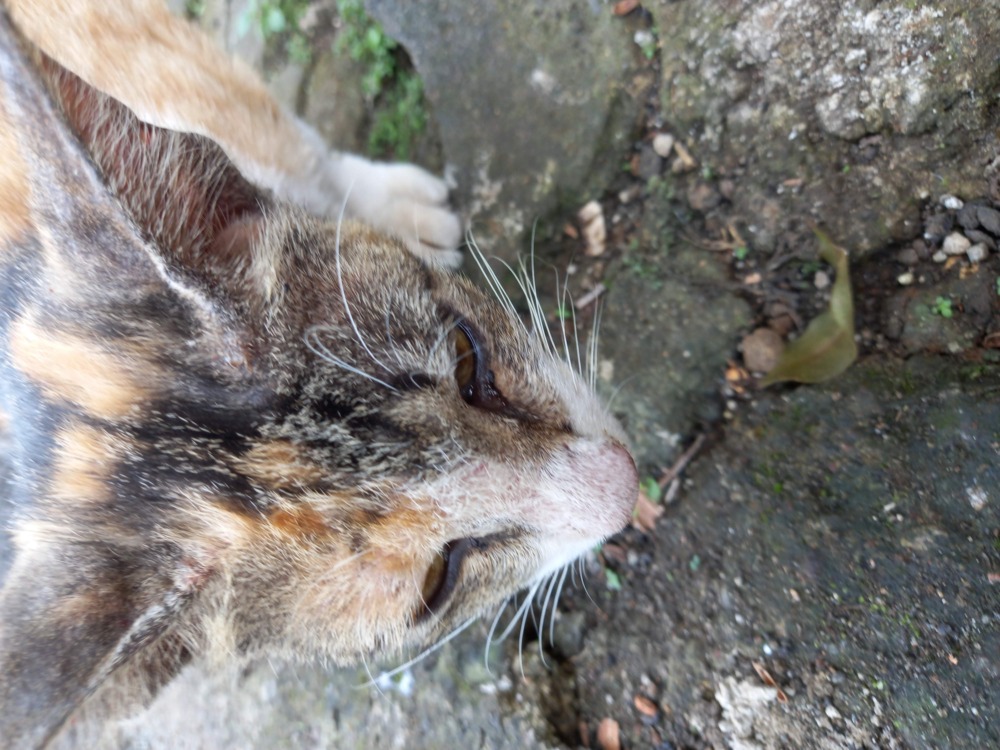
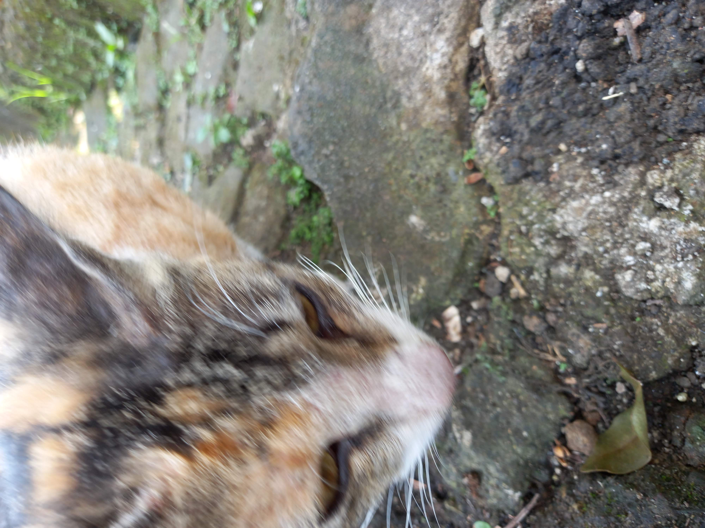
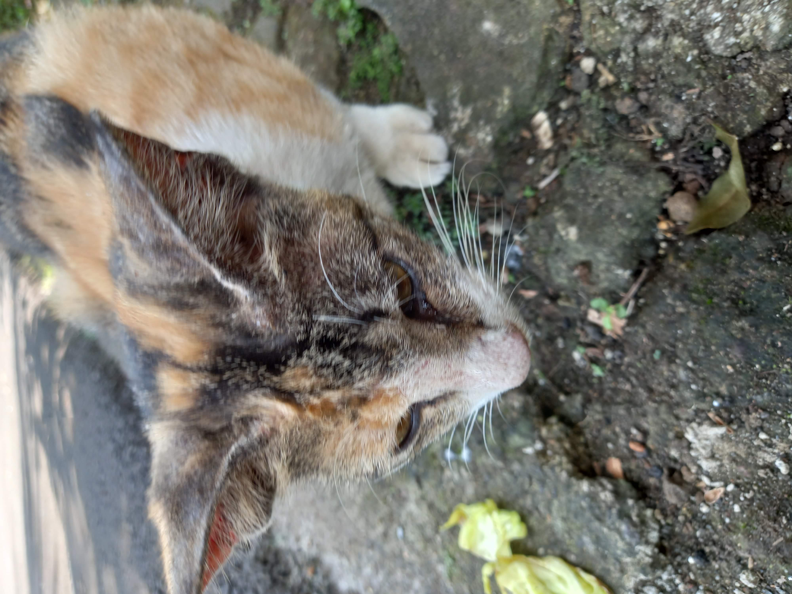
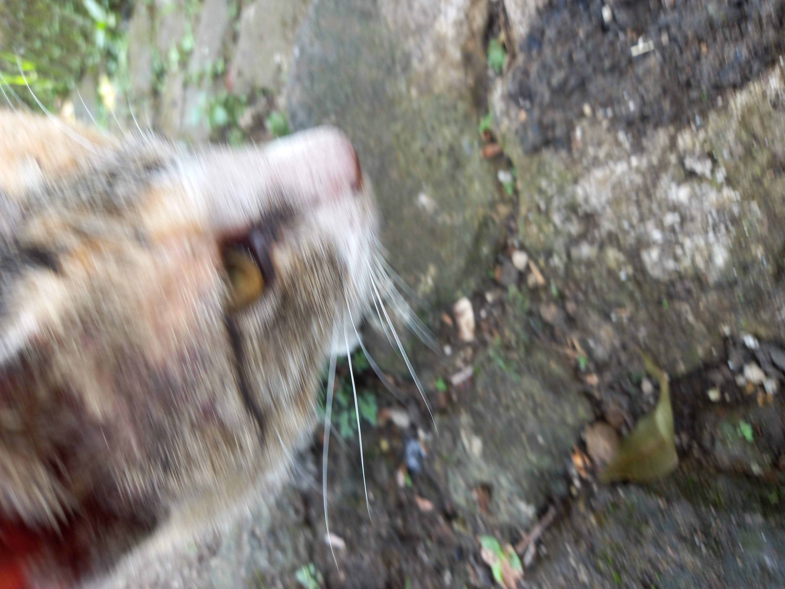

If you want to know more about Ikrason, come here and read the explanation down below! Ikrason is one of the interesting cat to read about in the article.
Before reading the articles and the narrative profile of Ikrason, we encourage you to look at the first five pictures of Ikrason, so that you know what Ikrason looks like.
Ikrason has an uncommon natural coat color. His fur features a combination of bright yellow, white, and light gray.





Picture 1.0 Ikrason sitting on an empty road
Ikrason is a stray cat that was discovered in the Aryawidura residential area. The cat has a unique fur featuring white, gray, and yellow fur. It was first encountered by A.R.D. in 2022. According to A.R.D., the cat used to roam around his home and would consistently stand in front of his gate. A.R.D. also noted that the cat was once dubbed the "first guard cat," a role later taken over by a "second guard cat." He would typically arrive in the morning, between 05:45 and 06:30 WIB.
Unfortunately, Ikrason is no longer present in the Aryawidura residential area. There is a tragic story behind his passing. This document contains details of that tragedy—content that may not be suitable for all audiences—so we ask for your discretion. According to A.R.D., “This cat never used to get into any trouble! He was perfectly fine and well-behaved.” However, an incident later occurred. A.R.D. explains that this took place a few weeks later, while he was out for a morning walk to get some exercise.
On a bright and crisp morning, A.R.D was preparing to go for a morning walk for exercise. As A.R.D opened the gate, Ikrason greeted him warmly. Ikrason then followed A.R.D as he walked toward the front security post. Upon reaching the security post—just before the main road—Ikrason suddenly darted across the busy thoroughfare. This is where the story takes a harrowing turn; what began as a pleasant moment ended in tragedy. As Ikrason crossed, he was struck by a motorcycle traveling at 50 km/h. While the impact was severe, Ikrason survived, though he sustained injuries to his mouth. In the days that followed, Ikrason became traumatized, growing fearful and constantly hiding underneath cars. A few days later, an even more horrific incident occurred: a witness, Y.A-F, saw the cat in a river, where it was then consumed by a large monitor lizard. We do not know the full details of Ikrason’s final moments, but one thing is certain: he has passed away.
Based on the account above, Ikrason was a stray cat that once lived in the Aryawidura residential area, known for frequently lingering around residents' homes. His life, however, met a tragic end following an accident while crossing a main road—an incident that ultimately led to his death. Ikrason’s story illustrates the various dangers faced by stray animals, highlighting the need for us to be more mindful of the safety and well-being of animals in our own neighborhoods.



